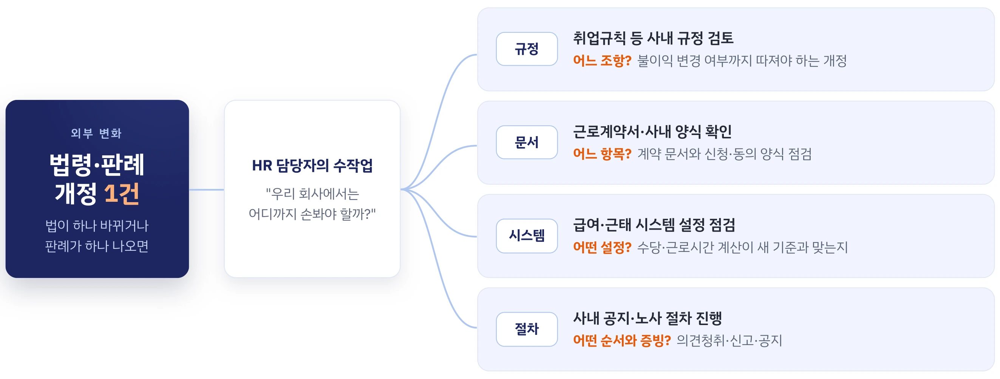

Case Study 01 · Product
피플로(PeopleLaw)외부 규제 변화를 우리 회사의 영향 분석, 매핑, 기록으로 잇는 AI 기반 HR 컴플라이언스 플랫폼
인사 실무 12년 동안 겪은 문제를 AI로 풀기 위해 만든 제품입니다. 법령이나 회사 조건이 바뀌면 손봐야 할 규정 조항, 신청 양식, 인사시스템 설정을 찾아 주고, 누가 무엇을 근거로 확정했는지를 기록으로 남깁니다.
KAIST AI대학원과 KAIST 창업원이 주관한 AI Agent 프로그램에서 4개월 동안 교육과 선발 절차를 거쳤습니다. 선발 인터뷰와 1차 오디션에서 문제 인식, AI 활용 역량, 사업 모델을 에이전트로 구현한 정도를 심사받아 50명에 들었고, 최종 오디션에서 피플로를 발표했습니다.
- 100명 선발
- 50명 선발
- 최종 오디션 진출
외부 변화 하나는 내부 수정 하나로 끝나지 않습니다
인사 현업 12년 동안 반복해서 겪은 문제에서 출발했습니다. 법령이나 판례가 하나 바뀌면 사내 규정 한 곳만 고치고 끝나지 않습니다. 인사 담당자는 "우리 회사에서는 어디까지 손봐야 하나"를 손으로 찾습니다.

영향이 닿는 범위와 정도는 사안마다 달라지고, 규정과 계약서, 급여·근태 시스템, 노사 절차까지 넓게 걸칩니다. 그런데 HR 컴플라이언스나 노무·노사 대응 하나만 맡는 전담 인력을 두지 않는 회사가 많아, 이 일은 인사 담당자가 다른 업무와 함께 맡게 됩니다.
그 결과 어디에 영향이 있었고 왜 그렇게 정했는지의 이력과 맥락이 담당자의 파일과 기억에 흩어집니다. 담당자가 바뀌면 그 이력이 체계적으로 이어지지 않아, 다음 변경 때 같은 검토를 처음부터 다시 하게 됩니다.
기존 솔루션으로 채워지지 않은 이유
인사 운영에는 강하지만, 회사별 차이를 맞추는 일은 고객 회사에 남습니다
Workday, SAP SuccessFactors 같은 제품은 여러 나라의 고객이 함께 씁니다. 그런데 나라마다 노동법과 규제가 다르고, 업종·규모·인력 구성에 따라 적용 기준이 다르며, 회사가 쓰는 규정·양식·시스템도 모두 다릅니다. 그래서 법이 바뀔 때 우리 회사의 어느 조항과 양식에 닿는지를 잇는 일은 고객 회사의 몫으로 남습니다.
회사에 맞춰 만들 수는 있지만, 바뀔 때마다 다시 손봐야 합니다
회사별 맞춤 개발은 회사마다 처음부터 새로 설계해야 합니다. 법과 사내 문서가 바뀔 때마다 다시 고쳐야 해서, 그 유지 부담이 회사에 계속 남습니다.
외부 변화와 내부 업무 사이에서 그 회사만의 맥락을 이해하고 유지하는 연결층이 비어 있었습니다. 피플로는 이 층을 만듭니다.
구조와 설계 의도
피플로는 법령 변경 한 건을 네 단계로 끝까지 처리합니다. 공식 법령을 매일 수집해 개정 전후 조문을 비교하고(감지), 법적 의무와 회사 사실을 대조해 영향을 받는 규정 조항, 양식 항목, 시스템 설정을 찾습니다(회사별 영향 매핑). 이어서 개정 문안과 절차를 정하고(검토·결정), 이행과 증빙, 결정 이력을 남겨 다음 변경 때 다시 씁니다(실행·보존).
단계마다 일하는 주체를 나눴습니다. AI는 초안을, 규칙 엔진은 판단 근거를, 사람은 최종 결정을 맡습니다. 법률 판단은 자동으로 확정하지 않고 전문가 검토로 넘깁니다.

왜 이렇게 설계했나: 인사 담당자의 눈으로
알림에서 멈추지 않고 회사 안 어디까지 잇습니다
법이 바뀐 것을 아는 것과 회사가 실제로 바뀌는 것은 다릅니다. 실무에서 손이 가는 곳은 개정 내용을 읽는 일이 아니라, 규정 조항과 신청 양식과 인사시스템 설정 가운데 손볼 곳을 찾는 일이었습니다. 그래서 회사별 영향 매핑을 제품의 중심에 두었습니다.
AI는 초안, 규칙은 판단 근거, 사람은 최종 결정
취업규칙의 문구는 직원의 근로조건이 됩니다. 그래서 AI의 답은 초안으로만 저장하고, 적용 여부와 문안은 담당자와 승인자가 확정합니다. 조건 대조와 기한 계산은 사람이 승인한 기준 값으로 규칙 엔진이 합니다. AI를 꺼도 같은 흐름이 끝까지 이어집니다.
법률 판단은 시스템이 결론 내지 않습니다
취업규칙 불이익 변경인지에 따라 밟아야 할 절차가 달라집니다. 이런 판단은 항상 '검토 필요'로 두고 전문가에게 넘깁니다. 대상은 다섯 영역입니다: 취업규칙 불이익 변경, 해고·징계의 정당성, 사용자성·단체교섭, 산업안전 위반, 자동화된 채용·평가 결정의 적법성. 이 선이 지켜지는지는 금지 동작 차단 시험으로 확인합니다.
담당자가 바뀌어도 근거가 남습니다
누가 언제 무엇을 근거로 정했는지, 어떤 증빙으로 반영을 확인했는지를 사안 단위로 묶어 보존합니다. 다음 변경과 인수인계 때 그 묶음을 다시 꺼내 쓰도록 했습니다.
검증과 규모
| 지표 | 값 | 무엇을 뜻하나 |
|---|---|---|
| 제품 코드 | 약 42,200줄 | 개발 분량입니다. 코어 서버(Python) 약 25,400줄, 웹 화면(TypeScript) 약 16,800줄이고, 코드는 AI 에이전트가 썼습니다. |
| 시험 코드 | 약 63,200줄 | 개발 분량입니다. 코어 서버 약 46,750줄, 웹 화면 약 16,450줄입니다. |
| 자동 시험 | 4,718건 통과 | 코드를 합치기 전에 도는 검사입니다. 한 번에 작업 여덟 개가 함께 돕니다. |
| 자동 검사 실행 | 491회 | 2026.09.07 이후의 누적 실행 횟수입니다. |
| 끝까지 가는 사용자 흐름 시험 | 29건 통과 | 수집함에서 종결 기록까지 브라우저로 끝까지 가 보는 시험입니다. |
| 금지 동작 차단 시험 | 12종, 40건 모두 통과 | 정해 둔 12종의 금지 동작을 일부러 시도하는 시험 입력 40건에서 기대한 거부 결과를 확인했습니다. |
| 고객사 간 데이터 격리 | 표 35개에 적용 | 고객사 자료가 담기는 35개 표에 데이터베이스 격리 정책을 적용했습니다. |
| AI 출력의 서버 검증 | 7단계 | AI에 허용한 작업은 네 가지뿐입니다. 그 출력의 형식, 입력 범위, 공식 원문 인용, 숫자와 단위 등을 서버가 검사합니다. |
| 다른 모델의 교차 검토 | 기록 279건 | 코드를 쓴 모델과 다른 회사의 모델이 읽기 전용으로 검토했습니다. |
2026년 10월 25일 기준 저장소와 자동 검사 기록에서 확인한 값입니다. 코드 줄 수와 실행 횟수는 개발 규모를 보여 주는 값이고, 동작은 사용자 흐름 시험과 금지 동작 시험으로 확인했습니다. 법령 원문과 개정 내용은 공식 자료이며, 화면의 회사 정보와 판단·이행·증빙 기록은 시연용 가상 자료입니다.
금지 동작 차단 시험 12종의 내용 보기
| 번호 | 시도하는 것 | 기대하는 결과 |
|---|---|---|
| C-01 | 금지 다섯 영역에 전문가 결론 없이 확정값 저장 | 거부. 값은 '검토 필요'로 남음 |
| C-02 | 근거와 재검토 조건 없이 '해당 없음' 저장 | 거부 |
| C-03 | 공식 원문 판이 아닌 글을 근거로 인용 | 거부 |
| C-04 | 아직 확정되지 않은 법(발의, 입법예고)에 허용 범위를 넘는 처리 | 거부 |
| C-05 | 전문가 검토 고지가 빠진 응답 | 오류 응답을 포함해 모든 응답에 고지 1회 |
| C-06 | 결정 기록, 원문 판, 회사 사실 판, 종결 기록을 고치거나 삭제 | 거부. 기록은 덧붙이기만 가능 |
| C-07 | AI 초안을 규칙 엔진의 입력으로 사용, AI 작업자가 결정 기록에 쓰기 | 거부 |
| C-08 | 규칙 엔진이 적용 여부를 스스로 확정 | 엔진의 출력은 늘 '검토 필요'. 결론은 사람의 결정으로만 생김 |
| C-09 | 다른 고객사의 데이터 조회와 교차 저장 | 없는 번호와 같은 응답, 저장 거부 |
| C-10 | 실제 회사명 입력, 실제 문서 올리기 | 가명만 허용, 올리기는 기본 거부 |
| C-11 | 허용 목록에 없는 AI 작업 실행 | 데이터베이스 제약이 거부 |
| C-12 | 승인 기록 없이 핵심 데이터 구조 변경 | 실패 |
개발 과정에서 쓴 검증 장치는 에이전트 운영 케이스 스터디에 따로 적었습니다.
기술 구성
- 코어 서버
- Python
- FastAPI
- PostgreSQL
- Row Level Security
- pytest
- 웹 화면
- TypeScript
- vitest
- Playwright
- 판정
- 순수 함수 규칙 엔진
- YAML 기준 데이터 (사람 승인)
- AI
- Anthropic Claude (제품 안 초안)
- 서버 검증 7단계
- 평가 세트와 합격선 (설계)
- 수집
- 법제처 국가법령정보 공식 원문
- 하루 1회 자동 실행
- 배포와 검사
- Render
- Docker
- GitHub Actions
- 개발 방식
- Claude Code (작성)
- Codex (교차 검토)
- 결정 기록 (ADR)
묻고 답하기
AI가 법률 판단을 하나요?
하지 않습니다. AI는 조항 매핑, 비교, 문안 같은 초안만 만듭니다. 조건 대조와 절차 계산은 규칙 엔진이 하고, 적용 여부와 문안은 사람이 확정합니다. 법률 판단이 필요한 다섯 영역은 '검토 필요'로 전문가에게 넘깁니다.
범용 AI에 회사 규정을 넣고 물어보면 되지 않나요?
그것도 실제 대안입니다. 피플로는 자료가 바뀔 때 관계를 갱신하고, 확인하지 않은 것을 구분하고, 다음 담당자에게 근거를 넘기는 흐름을 제품에 담았습니다. 같은 검토와 기록 수준을 유지하는 데 드는 전체 수고로 비교해야 한다고 봅니다.
코드를 직접 쓰지 않았는데 어떻게 검증했나요?
코드는 AI 에이전트가 썼고, 저는 무엇을 만들지와 무엇을 승인할지를 정했습니다. 정해 둔 범위의 자동 시험, 다른 회사 모델의 교차 검토, 사람 승인으로 개발 결과를 확인했습니다. 이 장치들이 모든 품질을 보증하지는 않습니다. 자세한 내용은 에이전트 운영 케이스 스터디에 있습니다.